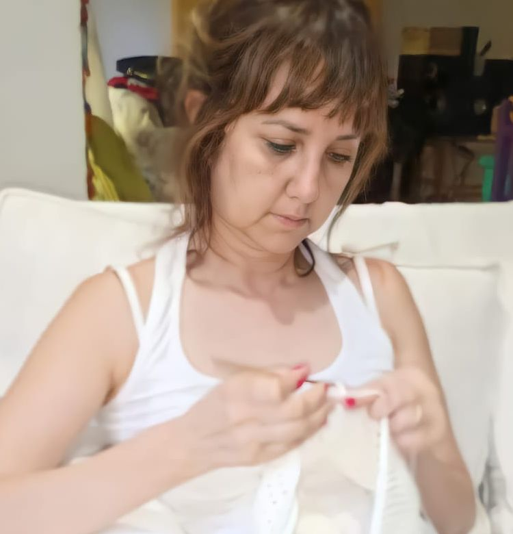
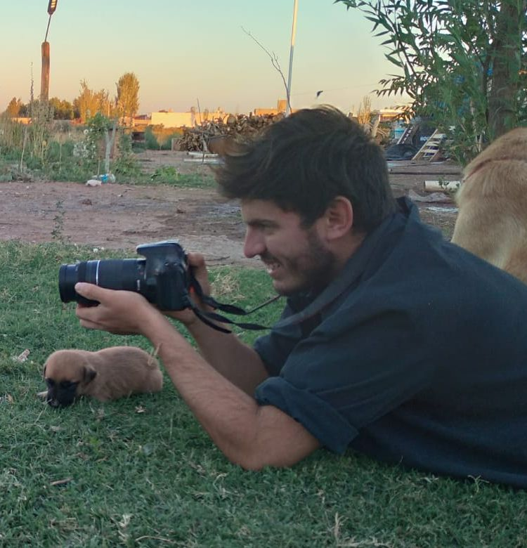

Target Audience
The target audience of the chamber is small and large businesses, people who are new in business, and companies with experience and track record. Our audience wants to be updated, learn about local training, and meet other merchants. They will range between 18 and 60 years old, and they will usually access our site via desktop computer.
Personas
Pamela
Pamela is 41 years old, and she has a crochet clothing and handicrafts business. She is a teacher, wife, and mother of two kids. Pamela started her business five years ago, and now, she is looking for a friend-partner for a new line of crochet baby clothes. Her goal is to be recognized and share what she loves to do with others She enjoys sharing her work via social media, but she prefers using a desktop computer for work..
Julian
Julian is 20 years old. He is single and has a certificate in photography and audiovisual. He is looking for opportunities to apply what he learned, and he wants to learn more about the field. Also, he is constantly seeking opportunities to improve himself in photography. He loves spending time with friends and family, standing outdoor, and being close to nature.
Scenarios
- I need to find courses to improve my abilities in my field.
- How can I find people who want to collaborate with me and my business?
- Is my business rentable for the actual economic situation?
- How can I improve my business?
- How can I protect my business and economy?